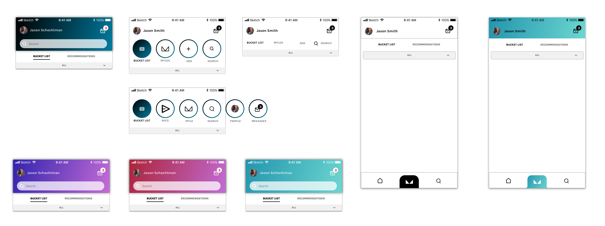
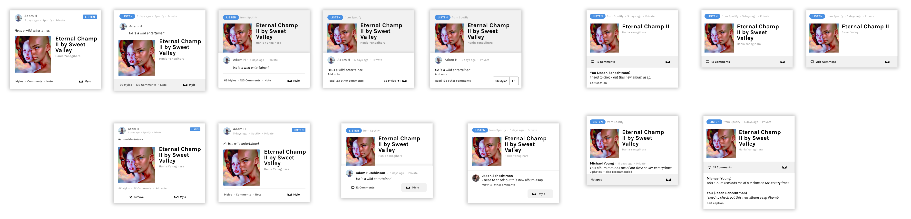

I am working with a startup to translate their value propositions into features, establish a visual system, and develop prototypes.
Mylo is an app to find, exchange, and keep track of recommendations.
The main features are the Bucket List, where users can keep things that they still want to do;
and a Tinder-like feature where users can also directly send recommendations to each other, and accept or reject recommendations.
See some of the animations I made on Principle to showcase interactions below.

|

|

|
I started with Figma wireframes, designed high-fidelity screens on Sketch, and exported them to Principle where the interactive prototypes were made. Mylo's founders are currently using the prototypes to pitch the app to investors.
First, after discussing features with co-founders and sketching the screens on paper and whiteboard, I moved into Figma. Using Figma was crucial to establish common ground with stakeholders. See an example below of our Figma board where the features acquired shape.

Second, constrained by the visual design tools offered by Figma, I moved into Sketch. I created more than a hundred screens on Sketch to implement all of our features, such as sign up flow, account settings flow, accepting and rejecting recommendations, etc. After finalizing the visual design, I exported screens to Principle for prototyping. See a few examples of my work on Sketch below.
First, see a few different designs for app navigation.
Second, obsessively trying to find the right design for the recommendation card. Dozens of variations were tested and discussed with stakeholders.
Finally, see the Sketch document with screens from version 0.1:
This is still a work in progress. I am actively updating the design system, interface design, and user experience design following user and investor feedback. Therefore, there are many small visual design details that can and will be improved in the next few months. For example, one important aspect that I would improve is branding and how it propagates into the app design. I didn't have much time to work on the logo, icon design, and color palletes yet as showcasing features are currently our focus.
In terms of tools, this was the first time I used Sketch and it was great learning experience. In my next project I will start using Symbols, Text, and Layer styles from the start. These tools are incredibly powerful and can dramatically cut down design iterations times if used properly.
← Click here to go back to the frontpage